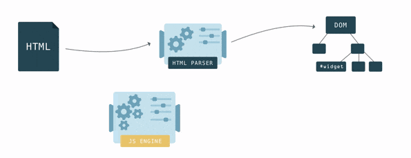

| BOM |
|---|
| Navigator Object | navigator.platform // "Win32"等
navigator.userAgent | jquery1.9开始去掉了$.browser |
| Screen Object | screen |
| History Object | history.go(-2)
history.back() |
| Location Object | location |
| Document Object | document或window.document |
| Iframe | window.top.location.replace('/page')
document.querySelector('iframe').contentDocument.querySelector('#selectTag').value |
| window.devicePixelRatio | 物理像素/css像素, 可用来判断用户是否是使用100%缩放级别 |
当HTML文档载入到浏览器, 浏览器会为文档中的所有Element创建一个隐藏的内部路线图(roadmap),为了让js与这些Element Object进行通信, 得知道连接到目标Object的路径, 才可以调用目标object其中的一个方法或设置目标Object其中的一个Attribute Value. 这个roadmap就是DOM |
| DOM Node |
|---|
|  |
| nodeType |
_element_node.nodeType // return 1
_element_node.getAttributeNode('class').nodeType //return 2, attribute nodes 已弃用
_text_node.nodeType // return 3, Element Node 或 Attr Node 中实际的文字
_element_node.childNodes[1].nodeType // return 8, comment Node <!-- 注释 -->
document.nodeType // return 9
document.doctype.nodeType // return 10, <!DOCTYPE html>
|
| Access 元素节点 |
var x=document.getElementById("bom");
var y=x.getElementsByTagName("p");
document.getElementsByName("myinput");
form1.myinput;
document.querySelector("#bom") === document.getElementById("bom") // true
document.querySelectorAll("p") == document.getElementsByTagName("p") // false 前者__proto__是NodeList后者是HTMLCollection
document.querySelectorAll("p")[0] === document.getElementsByTagName("p")[0] // true
document.querySelector("p") === document.getElementsByTagName("p")[0] // true
document.querySelector("li.active span") // 匹配指定选择器的第一个元素
参数支持CSS Selectors
_event.target // 事件目标节点
|
$("#elem[attribute=value] li:eq(3), .tb tr:even, p:first")// filter More
.get() // 获得DOM元素 |
| 祖先节点/元素节点 | _node.parentElement
_node.parentNode
_node.closest(selectors) // 匹配特定选择器且离当前元素最近的祖先元素（也可以是当前元素本身） | _el.parent() // 返回el亲生父元素
_el.parents() // 返回el的所有祖先元素
_el.parentsUntil(pel) // 返回介于el和pel元素之间的所有祖先元素 |
| 后代节点/元素节点 |
_el.children[0] // 子元素节点
_el.childNodes[0] // 子节点,包括text node, comment node
_el.firstElementChild // 第一个子元素节点
_el.firstChild // 第一个子节点
_el.lastElementChild
_el.lastChild
document.all // 返回document的子孙所有元素节点
|
|
| 节点包含关系 |
_pnode.contains(_event.target) // 判断节点是否是_pnode的子孙后代
|
|
| 同胞节点/元素节点 |
_node.previousSibling
_node.nextSibling
_el.previousElementSibling
_el.nextElementSibling
| _el.siblings()
_el.next()
_el.nextAll()
_el.nextUntil()
_el.prev()
_el.prevAll()
_el.prevUntil() |
| 元素相对index位置 | ? | .index() |
Get Attribute
在Firebug中查看DOM所有属性
Firefox选中元素右键显示DOM属性
Chrome properties | _el.getAttribute("src")
_el.value
_el.innerHTML
_el.innerText | $("#elem").attr("href")
$("#myinput").val()
$("#elem").text()
$("#elem").html() |
| Set Attribute | element.attribute=new value
document.getElementById("image").src="landscape.jpg";
_el.className="mk_msg";
_el.id="mk_msg";
_el.style.backgroundColor="red" // 所有-的属性改成驼峰式，否则在js里就是减号
_el.innerHTML="new HTML"
_el.innerText="text"
form1.myInput.value='7104'; | .attr(attribute,value) .removeAttr()
.addClass() .hasClass() .removeClass() .toggleClass()
$("el").css("color","red");
val?$("#elem").html(val):$("#elem").html(""); // 踩过的坑
val?$("#elem").text(val):$("#elem").text("");
val?$("#elem").val(val):$("#elem").val("") |
| Remove attribute | .removeAttribute("class") | .removeAttr()
.removeClass() |
| 元素是否存在/元素长度 | if(!document.getElementById("mk_msg")){
document.getElementsByTagName("p").length; | if($("#aaa").length==0)
或 .size() |
| 遍历 | ? | x=$("li").toArray()
for (i=0;i<x.length;i++){
alert(x[i].innerHTML)
$(selector).each(function(index,element)) // element可以用$(this)替代 |
| Create node | var new_elem = document.createElement("div");
document.createTextNode("文本节点")
_node.normalize() // 合并同级相联text node | ? |
| Insert element | _el.appendChild(new_elem); // 末尾追加新子元素new_elem
注意不是添加字符串
cvsNode = _el.appendChild(document.createElement('canvas'))
cvsNode.setAttribute('id', 'canvas' + i)
let tr = document.createElement('tr');
tr.innerHTML+='<td><input></td>'
_el.appendChild(tr)
var child_p1 = document.getElementById("p1");
_el.insertBefore(new_elem,child_p1); // 插入在el的某子元素#p1之前 | .after()
.append()
.appendTo()
.before()
insertAfter()
insertBefore()
.wrap() // 每个匹配元素外分别加个wrap
.wrapAll() // 在每个匹配元素外共同加一个wrap
.wrapInner() // 每个匹配元素里的内容分别wrap
.unwrap() // 删除所有匹配元素的父元素 |
| Move node | _node1.insertAdjacentElement(_position, _node2) // _position array: ["afterbegin", "afterend", "beforebegin", "beforeend"]
nodeParent.insertBefore(nodeChildA, nodeChildB) 将子节点 nodeChildA 移到 nodeChildB 结点前 | |
| Remove node | document.body.removeChild(document.getElementById("mk_mirror"));
_node.remove() | .remove()
.empty() |
| Replace element | _el.replaceChild(new_elem,child_p1); // 用new_elem替换子元素 | .replaceAll() 约等同于.replaceWith() // 元素替换被选元素 |
| Chaining链式操作 | document.getElementById("left_col").getElementsByTagName("li") | $('#el').addClass('dummy')
.css('color', 'red')
.fadeIn('slow');
$("#btn").click(function(e) {
}).mouseover(function(e) {
}).mouseout(function(e) {
});
.end() 结束当前链条中的最近的筛选操作，并将匹配元素还原为之前的状态
$('#ele').find('.foo1').css('color', 'red')
.end().find('.foo2').css('color', 'green');
源码: end: function() { return this.prevObject... |
| DOM Event |
|---|
onload
资源加载完成 |
window.onload=function(){
...
}
<body onload="myfun()">
<img src="x.gif" onload="loadImage()">
var img = new Image();
img.src = "x.gif";
img.onload = function(){} // 异步
var reader = new FileReader();
reader.readAsArrayBuffer(file);
reader.onload = function() { // 异步Demo
buffer = reader.result;
} |
$(document).ready(function(){ //document元素onready事件触发
...
});
$(function(){
...
});
$("#preview img").load(function(){}); |
onunload
用户退出页面 | ? | ? |
| onerror |
reader.onerror = function() {
...
}
window.onerror = function(msg, url,line, col, error) {
console.log(arguments)
}
console.log(undefinedA); //makeError
window.onerror = window.close // For that Native feel.
<img src="img1.jpg" onerror="this.src='img/default.jpg'"> |
$("img").error(function(){
...
}); |
| Ajax Response | xhr.onreadystatechange = function () {
result=xhr.responseText;
if (xhr.readyState !== 4) {
return false;
} if (xhr.status !== 200) {
return false;
}
} | $("img").error(function(){
...
}); |
| 常规事件 | onchange // 当输入字段被改变时
onfocus/onblur // 元素获得/失去焦点时,点击input或用Tab跳到此input中/从input中输完值，点击其它元素
onresize // 窗口或框架被重新调整大小 | ? |
| mouse事件 | onclick // 元素被鼠标点击了一下时
ondblclick // 元素被鼠标双击时触发
onmouseover // 当鼠标移进到元素范围
onmouseout // 当鼠标移出元素范围
onmousedown/onmouseup // 当鼠标在元素上按下/松开时 | jQuery(".c").click(function(){console.log('3click')}).mousedown(function(){console.log('1mousedown');}).mouseup(function(){console.log('2mouseup')});
1mousedown
2mouseup
3click |
| key事件 | onkeypress // 点了一个键盘中某个按键, 点击一个键，然后判断这个键的e.keyCode(IE)或e.which(非IE),并作出行为
onkeydown // 按下键盘中的某个按键, 用于保持此键不动(比如方向健)来控制滑动，直至松开才停止滑动
onkeyup // 松开键盘中的某个按键 | ? |
| touchscreen事件 | ontouchstart // 手指放在元素上时, 相当于鼠标的over+down
ontouchmove // 手指在元素上滑动上,相当于鼠标的down+move
ontouchend // 手指从元素上移开,相当于鼠标的up+out | ? |
| 设置事件 | <div onclick="myfun(event)"> | ? |
| 绑定事件 | function addEvent(_elem, _type, _callback) {
if (_elem.addEventListener) {//W3C
_elem.addEventListener(_type, _callback, false);
} else if (_elem.attachEvent) {//ie
_elem.attachEvent( "on"+_type, function() { _callback(window.event);});
}
}
//Usage
addEvent(document,'keydown',myHandler);
// 多结点绑定
document.querySelectorAll('.tab_wrap .tab').forEach(function(item) {
item.addEventListener('click', function(el) {
el.target.className = 'tab active';
| $("#el").click(function(){}); |
| 解绑事件 | // 解绑页面所有的click 事件
document.querySelectorAll('*').forEach(item => {
let listeners = getEventListeners(item)
if (listeners.click) {
item.removeEventListener('click',listeners.click[0].listener, false)
// 解绑第二个参数必须是他的listener
}
}) | $("#el").click(function(){ alert(1); });
$("#el").unbind('click').click(function(){ alert(2); }); // 解绑覆盖
$("#el").unbind(); // 解绑所有 |
| Access 事件对象 | e = e || window.event; // window.event for old ie browser | e |
| 事件源元素 | element = e.target || e.srcElement; // e.srcElement for old ie browser | $(this) |
| 事件属性 | e.altKey/e.ctrlKey/e.shiftKey // boolean alt/ctrl/shift键是否按下
e.keyCode
e.button // 哪个鼠标键被按下，左中右
e.clientX/e.clientY // 相对于屏幕的鼠标坐标
e.screenX/e.screenY// 相对于html/iframe的鼠标坐标
e.touches[0].clientY // 触屏用来获得第一个手指的clientY
if(e.touches.length == 1) // 如果这个元素的范围内只有一个手指的话 | - |
阻止事件冒泡
如果一个button上面有3层（div、ul、li）都定义了onclick属性, 则当button的click事件产生时，将会调用4个函数或语句,这个就是冒泡 | if (typeof e.stopPropagation === "function") {
e.stopPropagation();
}
e.cancelBubble = true; | $("el").click(function (e) {
e.stopPropagation();
}); |
| 取消默认事件 | if (typeof e.preventDefault === "function") {
e.preventDefault();
}
e.returnValue = false; | $("el").click(function (e) {
e.preventDefault();
});
return false; 阻止默认和冒泡事件 |
| 触发事件 | _el.focus()
_el.blur() | $("#el").click()
$("#el").trigger("click") |
| Storage |
|---|
| Get cookie | document.cookie | $_COOKIE |
Set cookie
因服务器时间未同步导致cookie到前端立即过期, chrome会继续请求给服务端，firefox会抛弃，所以chrome有容错 | document.cookie = "username=leon; expires=15/02/2013 00:00:00; path=/;domain=www.example.com; secure"; | setcookie('name','value',time()+3600,'/','markbuild.com',true,true); // 第一个true代表secure第二个true代表httponly
默认配置
ini_set("session.cookie_secure", 1);
ini_set("session.cookie_httponly", 1);
php.ini
session.cookie_secure = 1
session.cookie_httponly = 1 |
| Cookie with Secure Flag | HTTP环境下，浏览器不允许保存服务器响应的带有secure flag的cookies
HTTP环境下，浏览器不允许将HTTPS环境下保存在本地带有secure flag的cookies请求到服务器 |
| Cookie with Httponly Flag | JavaScript 不允许 access httponly类型的cookies，仅浏览器会将其获取保存在本地，在下次访问该服务器时在请求中带上
document.cookie只打印不包含httponly flag的cookie |
| Local Storage | 单条value没有长度限制，但是每个源使用总量有限制:10MB per origin in Chrome
localStorage.setItem('myCat', 'Tom');
localStorage.getItem('myCat');
localStorage.removeItem('myCat');
localStorage.clear(); // 清除当前origin下所有 |
| session Storage | 为given origin维持一个独立的存储区域，不会像cookie每次都要请求到服务端, 与LocalStorage的区别是: 该存储区域在页面会话期间可用(包括refresh和ctrl+shift+t恢复),关闭Tab后释放
sessionStorage.setItem("autoplaynotice", "1")
sessionStorage.getItem('autoplaynotice')
sessionStorage.removeItem('key');
sessionStorage.clear(); |
| IndexedDB | 不同于LocalStorage和SessionStorage的key-value结构，支持index索引的复杂数据 |
| Web SQL | w3c上提醒已被废弃 |
X-Frame-Options
SAMEORIGIN // 只允许同源嵌入iframe
DENY // 禁止被嵌入
ALLOW-FROM uri // 允许被某uri嵌入
protect against 'ClickJacking' attacks | add_header X-Frame-Options SAMEORIGIN; | header("X-Frame-Options: SAMEORIGIN"); |
Access-Control-Allow-Origin:CORS
域名后不要加 /
兼容性：要求IE10+ | add_header Access-Control-Allow-Origin *;
add_header Access-Control-Allow-Origin https://x.com; | header("Access-Control-Allow-Origin:*");//所有域都可以
header("Access-Control-Allow-Origin:https://www.myfoscam.com");// 仅www.myfoscam.com下可跨域访问 |
Strict-Transport-Security(HSTS)
它告诉浏览器只能通过HTTPS访问当前资源
max-age告诉浏览器收到这个请求后多少秒内访问这个域名下的请求都使用HTTPS, 即请求前自动将HTTP转成HTTPS，以避免输入HTTP时被中间人劫持,替换响应包的重定向https内容
includeSubDomains要求子域名也使用
对于设置后的HTTP请求浏览器会直接启用307重定向 | add_header Strict-Transport-Security "max-age=31536000; includeSubDomains; preload"; | - |
Content-Security-Policy:CSP
减少和报告XSS 攻击 | add_header Content-Security-Policy "default-src * data: blob:; script-src *.facebook.com *.fbcdn.net *.facebook.net *.google-analytics.com *.virtualearth.net *.google.com 127.0.0.1:* *.spotilocal.com:* 'unsafe-inline' 'unsafe-eval' blob: data: 'self'; style-src data: blob: 'unsafe-inline' *; connect-src *.facebook.com facebook.com *.fbcdn.net *.facebook.net *.spotilocal.com:* wss://*.facebook.com:* https://fb.scanandcleanlocal.com:* attachment.fbsbx.com ws://localhost:* blob: *.cdninstagram.com 'self'"; | <meta http-equiv="Content-Security-Policy" content="default-src 'self'; img-src *; child-src 'none';"> |
| Referrer-Policy | add_header Referrer-Policy no-referrer-when-downgrade;(default) | - |
| X-XSS-Protection | add_header X-XSS-Protection "1; mode=block"; | header("X-XSS-Protection: 1; mode=block"); |
X-Content-Type-Options
如果提供JSONP服务，就不要加nosniff,否则出现Cross-Origin Read Blocking (CORB) blocked cross-origin response错误 | add_header X-Content-Type-Options nosniff; | header("X-Content-Type-Options: nosniff"); |
cache-control
Public指示响应可被任何缓存区缓存
max-age相对过期时间，单位秒
no-cache不被缓存
no-store临时文件夹中不能暂存该资源 | add_header Cache-Control max-age=0, no-cache, no-store;
ngx_http_headers_module模块中有具体介绍 | <meta http-equiv="Cache-Control" content="no-cache, must-revalidate"/> |
| pragma | add_header Pragma no-cache; | <meta http-equiv="pragma" content="no-cache"/> |
expires
优先级比Cache-Control低, 同时设置Expires和Cache-Control则后者生效 | expires 10d; | <meta http-equiv="expires" content="0"/> |
| Do not track | 当用户设置浏览器开启"Do not track" 请求时，浏览器在Request Header中会添加dns:1 字段，这个头信息向网站的服务器表明用户不希望被追踪，这样，遵守该规则的网站就不会追踪用户的个人信息来用于更精准的在线广告。Do not track功能类似于Robots Exclusion标准，完全依赖于服务端的荣誉和礼仪，也就是说广告商可以忽略这个机制。 |